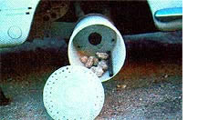

If you're looking for an easy way to make money in your spare time and who isn't these days, you might consider jojoba hunting. The "sport" is great for family outings, it requires almost no equipment or training, and best of allit can net a skilled picker up to $100 for one afternoon's foraging. The much in demand oil that's extracted from the jojoba seed is now selling for up to $50 per gallon . . . and some jojoba dealers and nurseries will pay you $2.50 for a pound of the large brown nuts.
At first glance, it seems unlikely that the scrubby little jojoba tree-which is native only to the Sonora Desert region of southern Arizona, California, Mexico, and the Baja peninsula-could attract much attention, but Simmondisia chinen. sis has recently created quite a stir with its "miracle" oil.
Ever since the U.S. banned all imports of whale derived products in 1971, the search has been on for a suitable replacement for the precious oils which we once got from the sperm whale (now an endangered, and protected, species).
The hardy jojoba has been growing wild right under our noses . . . but only recently have we discovered what a rich source of a valuable oil (which is very similar to the substance we formerly killed whales to obtain) the plant is. The seeds of this long-lived and rugged bush yield an average of 50% by weight of the colorless fluid . . . which is chemically classed as a liquid wax. (EDITOR'S NOTE: More detailed information on the chemical composition of jojoba oil-and on the history of the plant's cultivation-is available on page 80 of MOTHER NO. 48.1
Because of similarities in the organic makeup of the two substances, jojoba oil can be substituted for sperm whale oil in just about all of its applications . . . including its use in automotive lubricants, solid wax (candles and polishes), cosmetics and pharmaceuticals, and leather softeners. Products containing jojoba oil have begun to pop up in health food stores and beauty salons all over the country . . . and the "miracle" liquid is being touted as everything from a skin moisturizer to a cure for baldness.
Although experimentation with the jojoba is increasing all the time (1,000-acre plantations of the woody desert shrub have been established in North Africa, Australia, and the southwestern United States), there are very few commercial jojoba growers in full operation . . . so the field is still wide open for anyone who wants to take advantage of the high price, low volume market. If you'd like to join in the search for the desert bean, why not grab a bag, bring along a friend for safety's sake, and head for the sands? You can sell the seeds you find to nur series, plantations, or jojoba research organizations. And as a result you'll not only fill your own pocket, but perhaps help save a few whales, too!
If you live ( or plan to vacation) in any part of the 100,000-square-mile region where jojoba bushes grow wild, chances are good you'll be able to locate a stand of the hardy dry-land-dwellers. Jojoba thrives in the coarse, well-drained soils of the foothills . . , and the bushes usually grow at elevations of from 1,000 to 5,000 feet, along washes or dry slopes.
Most of the miniature trees grow to between three and seven feet high . . . although some of the really hardy bushes may reach heights of 15 feet! The oblong jojoba leaves are gray-green or bluegray, and nondeciduous. To tell the male and female shrubs apart, simply look for the distinctive brown nuts . . . the male plant produces only small, dark flowers-and no fruit-but the female will be loaded with golden seed cases.
During the prime picking season (midJune to late September), jojoba beans ripen at various intervals . . . which effectively extends the actual harvesting period. The large seeds are somewhat globe shaped and hang in clusters of one to three. An immature (and therefore not ready for harvesting) pod will be hard and green . . . while a ripened bean will have a light golden, papery husk that's easily loosened.
Although jojoba foraging is definitely a high-profit, low-cost venture, you wild need to gather a few essentials before you head off into the desert. For a convenient nut carrying apron, try recycling an old pillow case into a roomy picker's bag. All you need to do is snip off-from the open end-about 3/8 of the total length of the cloth sack (you may decide to remove a little more or less, according to your height . . . you'll want to keep the pouch's capacity high, but won't want the nut-filled sack bouncing off your knees while you walk). To make waistband ties for the carrier, cut the shearedoff loop into two equal lengths . . . then sew the bands to opposite sides of the case (on its open end). These strips can be tied around your waist, allowing the bag to hang loosely in front of you.
A wise jojoba hunter always makes sure he or she has a sufficient supply of water on hand when traveling in the wilderness . . . and, of course, it's also a good idea to wear a wide-brimmed hat for protection from the fierce desert sun! One further word of caution: Most desert wildlife is harmless, but you should be on the lookout for snakes. ( If you happen to see one, the best thing to do is move away calmly and slowly, so you won't alarm the serpent.)
When you reach an area that looks like prime jojoba-picking territory, park your car well off the side of the road and look around for "No Trespassing" or "Private Property" notices. If you see any such signs, check with the nearest ranchers to see whether they would object to your collecting on their land. Remember, too, that if you want to forage in a national forest, you'll need to obtain a local Forest Service permit.
Once you've gotten the necessary permission, you can start scouting for nutbearing female bushes. When you finally see that first loaded tree, you'll be tempted to reach out and start grabbing the valuable golden globes . . . but beware! Your first approach to any jojoba tree should be a cautious "hornet check". Using a three- or four-foot-long stick, poke gently into the densely tangled center of the bush. Believe me . . . if there is a,hornets' nest deep inside the branches (and there often will be), you'll know right away'. When the little stingers begin to emerge, simply jog on down to the next plant . . . and repeat the "stick-'emout" procedure there. If no insects appear, the shrub is probably safe, and you can get on with the picking!
Using both hands, gently pull the nuts from their moorings. Don't worry if the thin husks crumble and fall off as you pick . . . that just means the beans are fully ripe and ready for harvesting. Stay at one bush until you've collected every accessible nut . . . even if the tree is a small one. I've found that it pays to stick with any bean bearing jojoba, rather than to wander past lots of good trees in search of the perfect mother lode (which may or may not ever turn up!).
One fully grown jojoba shrub can yield as much as ten pounds of nuts, but three to five pounds is closer to the average. When your bag is full (and heavy!), go back to the car and empty the harvest . . . then have a gulp of water before returning to the desert scape. As long as you take regular cool off breaks, you'll be able to continue picking until you're satisfied with the day's "take".
You may not do as well as you'd hoped to the first time out, but experience will quickly improve your ability to "haul it in" . . . and after a few more trips, you should be able to collect 40 or 50 pounds a day in areas with heavy concentrations of jojoba stands. ( At an average selling price of $2.00 per pound, you can earn as much as $100 for a few hours' work!)
Once you're back at home, transfer the beans into burlap bags if you plan to sell them "as is" (unhulled). You'll probably want to clean and shell the kernels, however, since they're worth almost twice as much that way! Besides, it's a heck of a lot easier than you might think to dehusk the brown beauties . . . in fact, most of the seed pods will already have fallen off in the process of picking and handling.
You can hull your remaining jojoba seeds usingbelieve it or not-your own car or pickup. In addition to a set of wheels, you'll need two round plastic restaurant containers (I use the 20-pound size, which can be obtained for about a dollar each from many sandwich shops) with snap-on lids, seven or eight medium sized (twoto three-inch) rocks, a length of iron pipe-or a strong stickthat's as long as the inside height of the restaurant tubs, and some large washers. Using a drill, bore a pattern of holes (slightly smaller in diameter than a single seed) all over the sides (and around the border of the lid) of one plastic buck et, as shown in the accompanying photo.
Next, jack your vehicle up ( just as you would when changing a tire), remove the wheel, and set it aside. (Don't forget to "chock" the remaining three tires with bricks for safety . . . and do not use a vehicle with limited slip differential for this purpose, as it'll drive off the jack when started.) Now trace the bolt and axle pattern onto the container's bottom, and then use your jigsaw to cut the holes . . . since the plastic is brittle and easily breakable. Finally, bolt the tub in place ( if you fit washers onto the lug nut studs first, the container will be less likely to crack under stress).
After the bucket is securely fastened to the wheel hub, you can put in the rocks and then add seeds until the container is about 3/4 full. The stones should be large enough to break the outer hulls . . . but not big enough to damage the seeds themselves. (You'll just have to keep experimenting until you find exactly the right size.) Before you snap on the lid, place the pipe or stick inside the container, being sure that the tub's top will wedge it firmly in position . . . this will ensure the even tumbling of the beans.
With the bucket in place and filled with nuts, start the car, shift it into first gear, and let it idle for about 15 minutes. As the container spins on the hub, you should hear the steady knock of tumbling rocks . . . and see the broken husks coming out of the holes you made in the tub. When the time's up, turn off the engine and open the lid of the bucket just a bit to check on your seeds. If most of them look husked, place a blanket on the ground under the tub, take off the lid . . . and let the rocks, pipe, and hulled nuts fall out. Remove the unwanted loose material, then transfer the clean seeds to your second restaurant bucket.
Finally, you'll want to get rid of the last bits of empty husk that may still linger among the beans . . . and a simple, homemade winnower can do the trick. After switching your vacuum cleaner nozzle over to the "blow" side, extend the hose by fitting another piece of plastic pipe into its end. Then stick the tube into the bucket full of seeds and with the blower on lightly "scoop" the nuts up against the side of the container . . . being careful not to push them too high. The husked seeds will fall back into the tub, and the last bits of chaff (hulls) will be blown away by the hose.
If the finished seed looks scarred or broken, the rocks used in the hulling process were probably too large . . . and you can substitute smaller ones next time. On the other hand, if a lot of seeds are still "wearing" their pods, you need to use larger stones in your tumbler.
After all that refining is done, it will finally be time to deliver your bounty to the nearest purchase point. Consult the accompanying list of buyers, and write or call to find out what their specific purchasing days and hours are. And as you reap those profitsremember that your foraging efforts are contributing to two worthwhile causes . . . beefing up your own budget and helping to ease the plight of the sperm whale!
|
Winnowing the""chaff"" with a vacuum. |
An auto-powered jojoba huller. |
 The jojoba bush . . . a source of valuable, oil rich nuts. |
|
|
|
|